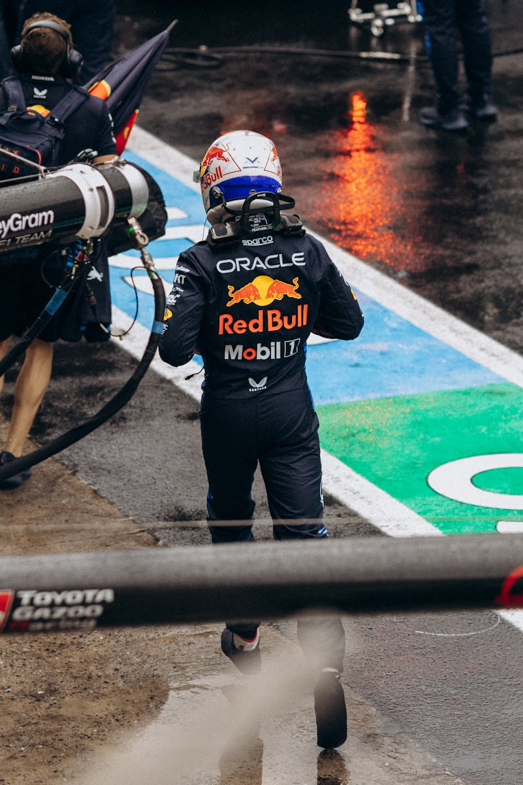
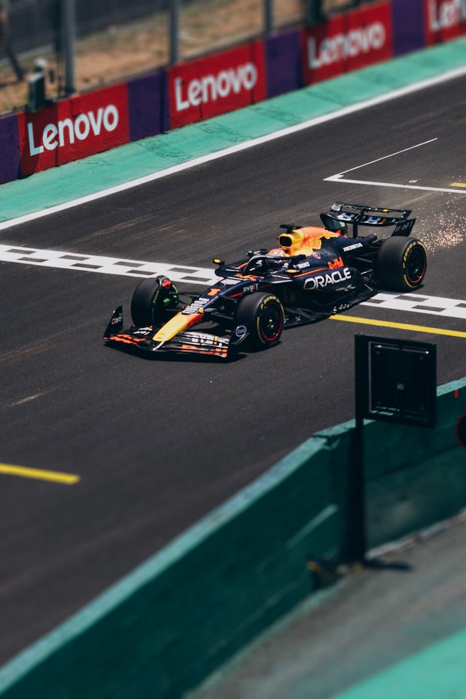
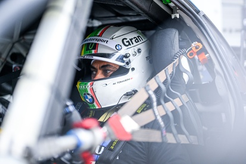
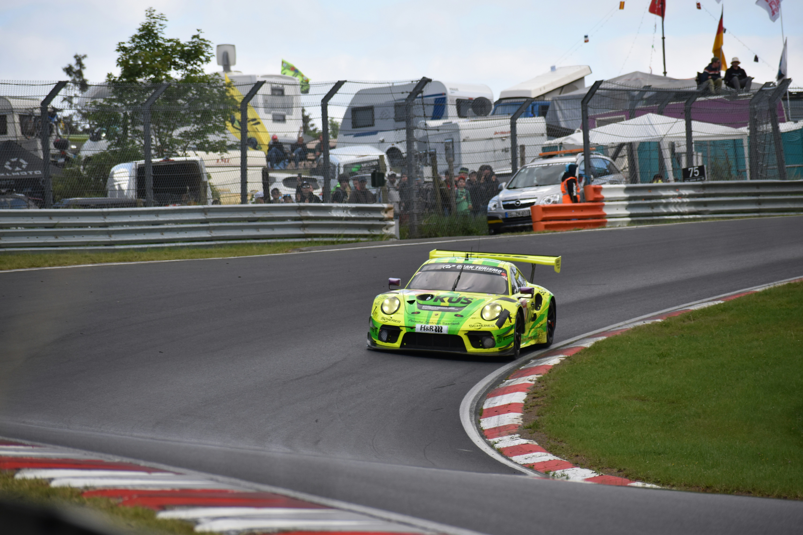

Max Verstappen abandona as 24h de Nürburgring
Clique para acessar a notícia completa.

Red Bull encontra brecha no regulamento da F1
Clique para acessar a notícia completa.

Equipe de Augusto Farfus abandona prova
Clique para acessar a notícia completa.

Manthey abandona após rodada de Kevin Estre
Clique para acessar a notícia completa.